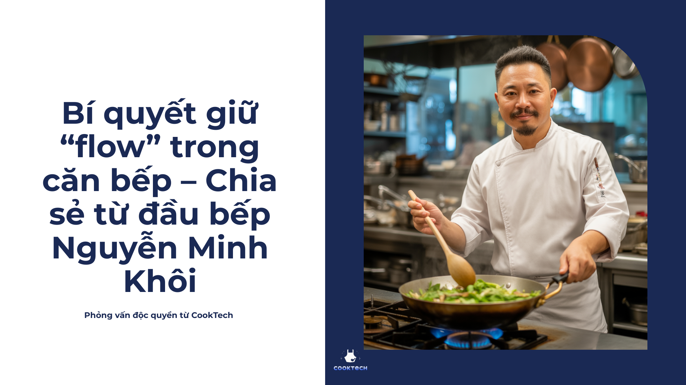

Bí quyết giữ “flow” trong căn bếp – Chia sẻ từ đầu bếp Nguyễn Minh Khôi
Trong thế giới ẩm thực, ai cũng nói đến kỹ thuật, nguyên liệu, hay công thức. Nhưng với đầu bếp Nguyễn Minh Khôi – người có hơn 15 năm kinh nghiệm tại nhiều nhà hàng 5 sao – điều quan trọng nhất lại nằm ở một yếu tố tưởng chừng đơn giản: giữ được sự mượt mà và cảm hứng liền mạch trong quá trình nấu ăn.
Anh Khôi chia sẻ:
-
“Một bữa ăn ngon không chỉ nằm ở hương vị, mà còn đến từ cách người nấu duy trì cảm hứng. Khi bạn không bị gián đoạn, món ăn sẽ mang năng lượng tích cực hơn rất nhiều.”
1. Chuẩn bị kỹ càng – bước khởi đầu cho sự liền mạch
Theo đầu bếp Khôi, 70% thành công của món ăn nằm ở giai đoạn chuẩn bị. Việc sơ chế, cân đo gia vị, và sắp xếp dụng cụ gọn gàng sẽ giúp bạn không phải ngừng lại giữa chừng.
-
“Ngày trước, tôi thường phải lật sách hay mở điện thoại để xem công thức, đôi khi làm gián đoạn cả quá trình. Giờ đây, với chiếc tạp dề thông minh Cookmate, công thức được hiển thị trực tiếp qua màn hình AR.
Tôi vừa nấu, vừa theo dõi từng bước mà không cần rời bếp. Flow của tôi luôn được giữ nguyên.”
2. Biến căn bếp thành sân khấu sáng tạo
Với anh Khôi, căn bếp chẳng khác nào một sân khấu. Tiếng dao thớt, tiếng dầu sôi, mùi thơm lan tỏa – tất cả tạo nên một “bản nhạc” mà người nấu chính là nhạc trưởng.
-
“Khi nấu ăn, tôi thường muốn biến tấu ngay tại chỗ. Ví dụ, đang làm gà xào thì nảy ra ý tưởng thêm một loại gia vị mới.
Nhờ Cookmate, tôi có thể tìm ngay gợi ý biến tấu mà không phải dừng lại tra cứu. Nhịp điệu trong bếp cứ thế liền mạch.”
3. Sáng tạo nhưng không bị gián đoạn
Một lỗi phổ biến khi nấu ăn là dừng lại giữa chừng: tìm công thức mới, thiếu nguyên liệu, hoặc đổi ý. Điều đó khiến cảm hứng nhanh chóng bị cắt ngang.
-
“Điều tôi đánh giá cao ở Cookmate là khả năng gợi ý thay thế nguyên liệu ngay lập tức. Thiếu chanh? Bạn có thể dùng giấm táo.
Thiếu đường nâu? Hãy thử mật ong. Mọi thứ đều được hiển thị trực quan mà không làm gián đoạn quá trình nấu.”
4. Giữ trọn cảm xúc – gia vị đặc biệt nhất
Với đầu bếp Khôi, nấu ăn không chỉ là chuyện dinh dưỡng, mà còn là cách gửi gắm tình cảm. Một món ăn được thực hiện trong sự mượt mà, trọn vẹn flow sẽ mang đến năng lượng tích cực cho cả gia đình.
-
“Công nghệ như Cookmate không thay thế người nấu, mà đồng hành cùng họ. Nó giúp bạn giữ cảm xúc nguyên vẹn từ lúc bắt đầu đến khi hoàn thiện món ăn.”
Đầu bếp Nguyễn Minh Khôi kết luận:
-
“Khi bạn Cook Without Pause, bạn không chỉ tạo ra món ăn, mà còn tạo ra kỷ niệm. Đó là giá trị lớn nhất của nấu ăn.”
Cookmate tin rằng mỗi căn bếp đều có thể trở thành không gian sáng tạo, nơi cảm hứng luôn đầy ắp và niềm vui luôn hiện diện.
👉 Hãy để Cookmate đồng hành cùng bạn để mỗi bữa ăn trở thành một trải nghiệm mượt mà và trọn vẹn.